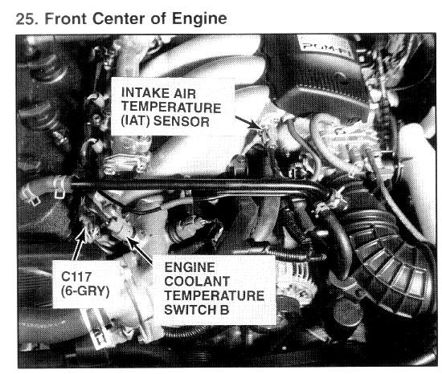

Operation CHARM
: Car repair manuals for everyone.
Home
>>
Acura
>>
1994
>>
Vigor L5-2451cc 2.5L SOHC G25A4 FI
>>
Repair and Diagnosis
>>
Engine, Cooling and Exhaust
>>
Cooling System
>>
Engine - Coolant Temperature Sensor/Switch
>>
Coolant Temperature Sensor/Switch (For Computer)
>>
Locations
>>
Photo 25
Photo 25

Front Center Of Engine